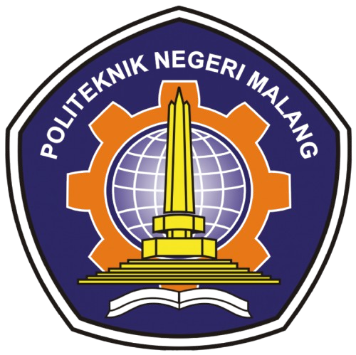

TEKNIK INFORMATIKA
Pada tahun 2010 berdasarkan kkebutuhan masyarakat dan industri terkait Program Diploma IV di bidang Informatika maka Polinema mendirikan Program Studi baru Diploma IV(DIV) Teknik Informatika(TI). Pada awalnya berddirinya jumlah peserta didik Program D-IV TI hanya terdiri dari 46 Mahasiswa, namun pada tahun 2015 jumlah peserta didik Prodi D-IV TI telah mengalami peningkatan menjadi 545 Mahasiswa
Perkembangan jumlah mahasiswa yang sangat pesat baik di Program Studi D-III MI maupun D-IV TI menunjukkan peningkatan jumlah peminat yang sangat tinggi. Program studi ini terus berupaya dalam menghasilkan lulusan di bidang informatika dan teknik elektro berdasarkan SK Dirjen Nomor 55 dalam rangka pengembangan mutu pengelolaan dan pendidikan serta ikut berperan di dalam Jurusan Teknologi Informasi (JTI) dengan Program D-III MI dan D-IV TI.